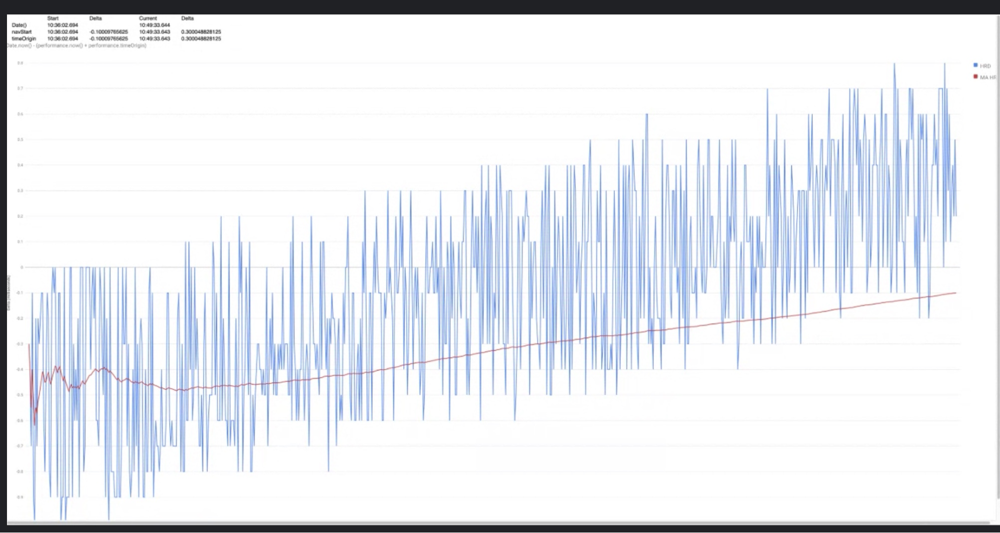

Participants
- Michal Mocny, Nic Jansma, Dan Shappir, Noam Helfman, Asmeet Oberoi, Alex N Jose, Ian Clelland, Rafael Lebre, Yoav Weiss, Lan Wei, Aoyuan Zhou, Amiya Gupta, Nolan Lawson, Abin Paul, Carine Bournez, John Engebretson, Giacomi Zecchini, Daniel Libby,
Admin
- Next meeting: October 13th @ 11am EST / 8am PST
- Nic: Summary of post-TPAC items (minutes, videos, summaries, links…)
- …Next meeting at alternative slot 11am EST
- …We will skip the meeting after that, due to Performance.now (Oct 27)
- …2 items today
Minutes
- Amiya: (presented as TPAC, quick review of last update)
- Nic: There’s been update on the github issue
- Nolan Lawson:
- Contex: at salesforce we’ve been looking at something similar with Aria ID reflection, so I thought this was similar enough I took a stab at it
- I presented a few options on the github issue
- Option 1 - top down, seemed to be shut down fairly quickly
- Option 2 - bottom up, and every level of the shadow tree has to opt-in. Preserves encapsulation
- Option 3 - just works
- Option 4 - a flavor of option 2, but have to delegate once, and skip shadow roots
- Option 5 - by default, the element timing attribute would get the top-most shadow root into the perf entry
- Opt in would expose the actual element
- Yoav: Struggling with encapsulation argument
- … not sure I fully grasp what it’s trying to preserve, other than theoretical purity
- … seems like shadow-roots and element don’t have their own execution context
- … if writing things to window, it’s on window, same with console.log
- … not sure what exactly we’d gain from trying to contain their timings outside of the global
- … doesn’t seem more ergonomic
- … not sure if there’s another argument favoring encapsulation beyond developer ergonomics
- … unfortunately we don’t have those individuals arguing in favor of encapsulation here
- … folks who are more likely than me to use this API, is there a preferred option there from a developer perspective
- Nolan: I’d be interested in hearing from Amiya as well, pretty much any of these options work for us
- … we control our framework so we can do whatever we want
- … worry about using from multiple frameworks and trying to stitch together
- … Option 2 having to bubble up, I’m fine with it, but it’s not ideal
- Yoav: Follow question, in this scenario you will always opt-in if there are some components that report to themselves but not global, is this interesting?
- Nolan: [shook head no]
- Amiya: Dealing with first party scenarios where you can mandate, we can do that
- … the third-party scenario is interesting, but is it fair for web components to be able to hide web timings from a page hosting it.
- … can the component decide what the page can do but not vice-versa?
- … in practical terms that’s not something I’m dealing with at the moment
- Michal: Context of Github issue is ElementTiming and developer wanting to measure timing of the whole component or elements in component. How does this relate to LCP, in particular your proposal Yoav in Option 5, by default whole shadow-root would be treated as single element
- … If a user would opt-in it would be sliced, would it affect LCP
- … What is the relationship between shadow root, custom elements and LCP?
- Yoav: Difference between element timing and what Chromium does
- … Chromium nullifies element, ID maintains element timing values as identifier
- … I was proposing something similar
- … I think this makes general sense from LCP
- … Opt-in could help people get more details from LCP, but I wouldn’t want it to change values reported from LCP
- Michal: One argument for encapsulation is if you import a custom list button, or a whole app, but to treat that as one big element from LCP perspective, encapsulation doesn’t make sense from element timing
- … Don’t know if you can have a single blanket policy
- … Weird to have developer be able to make that distinction
- Yoav: For LCP, assuming that an opt-in doesn’t change the result, but just the attribution, does it make a significant difference?
- Michal: No
- … I like the Option 5, I was just curious how it relates to LCP
- Yoav: We’ll need to change the definition so LCP is changed regardless of how the attribution happens
- … We’ll split the attribution below that point
- Nolan: If we took your Option 5 and forgot about the option, is that inline with the current spec today?
- Yoav: It is not what the current spec says, but it doesn’t seem hard to do that
- … As well as modify the implementation, it doesn’t sound possible
- Ian: Not sure about reasoning the component author to opt-in, there is no security boundary between component and page that embeds it
- … Seems weird person debugging components needs cooperation of library author
- … Looking at MutationObserver model, it doesn’t descend into shadow-roots, but developer can attach
- … If we’re not going to change defaults, person who owns the page embedding it in, should have the permission to inspect further
- Nolan: I can’t speak for Anne and Ryosuke, but to convey their argument, I think a lot of developers think open shadow root as default, but if you assume closed shadow root as dom, it makes sense
- … In closed shadow dom, you can’t traverse elements on page
- Yoav: I did see a hack where you can override attach window and make those closed shadow roots open
- Nolan: Not going to dispute that
- Ian: Argument there’s no security boundary
- Nolan: New specs should not make a distinction between open and closed shadow roots, we should default to the closed model
- Yoav: Do you know where this is, there’s no web components WG, used to be a CG, things were all dispatched into various different specs
- … Is there a community where we can have that discussion?
- Nolan: WebComponetns CG, I can make introductions
- Daniel Libby: Recent change in Chromium to make time more in spec
- … Changed when document was created based on system clock at the time
- … Since then there have been two patches to adhere to a notion of a monotonically non decreasing clock
- … Doesn’t change between multiple browsers/tabs in same session
- … On Windows specifically, this had the effect of adding clock skew that happens over a browser session start to affect the metrics that web apps we’re using to measure performance
- … End-to-end scenario of using and external timestamp based on system clock to monotonically increasing performance timing clock, is the wrong comparison to make
- … These timestamps have looked close to the Unix Epoch in the past
- … Developers have compared these values
- … Want to get opinions from others in WG
- … Should timeOrigin be tied to the system clock at all?
- … Or should it be tied to a system counter
- Yoav: From my perspective we’re trading off two desired characteristics here
- … One is to have consistency across all the timestamps that one would measure during the lifetime of a page and across different documents
- … You don’t want skew between those two measurements
- … If you got a timestamp and user modified their clock or NTP, you don’t want timestamp to be short or long based on those clock changes
- … Thought process behind the spec as it is today
- … What I’m hearing from you there’s also a desire to compare those timestamps over time to some external clock, and know they don’t skew over time
- … Does that capture the problem well?
- Daniel: Yes
- Yoav: Would like to hear more about use-case
- Nic: Would this affect performance.now() or just .timeOrigin
- Yoav: You could have multiple documents with its own timeOrigin
- … Measurements inside of a single documents could be fine
- Nic: Only affects multiple documents over time
- Yoav: I think if you open multiple documents over time you’ll see a skew over time
- Ashmeet: Scenario: A webpage is loading in a browser, having that origin timestamp moving to another API like navigationStart, would not be affected. But we started seeing scenarios where we compare an external action which led to that document that opened that browser. Clicking on a doc or link in a desktop app, where you’re now comparing that with timeOrigin.
- … That gap, is larger
- Yoav: Mostly around the opening of a document from a different document, or different links in different places
- Nic: Why does one need to compare timeOrigins across documents?
- Yoav:
- Noam: Discussion we had two years ago about this exact scenario - user clicks on a link or opens an app with a bookmark and we need a reliable way to understand the interaction from one place to when the navigation started
- … no proposals to address that, but it is an important need
- … relied on time origin in some scenarios, and compared it to another timestamp
- Yoav: So you compared timeOiring to timestamp that represented Epoch time in non-browser contexts?
- Noam: In this case I think it was a browser context yes, but a separate origin
- Ashmeet: Could be browser or non-browser
- … Issue shows up in both cases
- Yoav: If we’re just talking about the timeOrigin, there’s a tradeoff I had in mind, but I think it’s potentially off.
- … The only cost of maintaining the skewing between documents is we have a hard time still comparing between different contexts
- … The skew there will accumulate
- … For the navigation point itself we won’t have skew, but if we have a timestamp in two contexts, we’ll need to sync clocks to reduce skew before we compare
- … Where if we kept timeOrigins in sync we won’t have that problem
- Noam: Spec doesn’t require timeOrigin to be same across different contexts, but I wonder if there is a way to have some context that is shared
- … System clock is not reliable, from time of interact to other, it could be adjusted by user/NTP
- Michal: I think Noam just said what I was going to say
- … In many use-cases we’re sampling time at different moments, because even if we sync, the samples will be from different
- Noam: Not saying we need to change timeOrigin, maybe need for another API that provides consistent time across contexts
- Yoav: timeOrigin to calculate timestamps, a systemTime to enable those kind of comparisons across different documents
- Noam: And external apps
- ... There was a launchTime which would reflect when a document was launched in terms of interaction, could be another origin that launched it
- … Our life of page measurements begins at navigationStart
- … We don’t know what happens out of that
- … There’s an important case in understanding the gap between the initiator timestamp and the actual document navigationStart
- … Having something between them is not trivial to do
- Daniel: You’d need the system monotonic clock, from my understanding that’s a platform-specific thing
- … Would require external applications to use that same source
- Yoav: At least some implementations, the clock-code is platform specific
- … Assuming other platforms have similar monotonic clocks, reflecting those directly somehow doesn’t seem impossible
- Ian: Are there two different things being asked for? One is a monotonically increasing clock running in the context o f the page, os even if the user adjusts the time while page is running,w e still have a sequentially increasing clock
- … The other thing is the guarantee to tie this to system time across documents, origins, processes, that’s a different requirement
- Yoav: As Dan said, there are also workers, but yes
- Ian: Preventing clock skew within document makes sense
- … But requirement that this always conforms to exact system time seems harder and different
- … I’m wondering if those are separable
- Noam: Original issue started with the second aspect, having a global time context (origin)
- Ian: Guaranteed something to be correct across processes
- Ashmeet: The fix is addressing the first one, instead of starting at 0 it starts at ticks and converts into timestamps, the second is the hard one
- … Finding the amount of time that something happened between processes is hard
- Marcel: I noticed years ago this drift, I remember searching here for this quick demo
- … [demo]
-  height: 332.00px; margin-left: 0.00px; margin-top: 0.00px; transform: rotate(0.00rad) translateZ(0px); -webkit-transform: rotate(0.00rad) translateZ(0px);" title="">
- … Drift happens on system
- … A lot of users changing their clock, e.g. cheating on games
- … I was trying to use timeOrigin as monotonic clock, we abandoned that case
- … I’m running on a Mac
- … Linux wasn’t a problem depending on the OS or browser
- Yoav: From your perspective, this drift is still present after the Chromium change,is that correct?
- Marcel: In beginning it was seconds of drift, now it’s half-seconds now
- … Redline here is moving average
- … Now is much better
- … Goal is to send server time and pick this based on monotonicity of timeOrigin and performance.now() instead of when user is picking clock
- … We found other solutions
- Nic: Is the solution to just expose QPC QueryPerformanceCounter in browser, then you can compare across apps and browser tabs
- Yoav: Seems potentially risky as Ian points out elsewhere
- Ian: Security teams have real issues when exposing high-resolution timestamps
- Marcel: When I noticed was when Spectre mattered
- Yoav: Skew you’re seeing is not related to fuzzing?
- Marcel: [nods]
- Yoav: What would be good next steps?
- Daniel: I do think authors have what they need to get that value, system clock vs timeOrigin, subtract performance.timeOrigin - Date.now(), from compat perspective
- … Second question is do we need a system wide monotonically increasing clock that is subtly different from timeOrignn
- Nic: Not sure you can calculate the drift, as JS start running later
- Ashmeet: what used to be a few milliseconds is now 18 seconds in the 95%ile
- … difference between navigationStart and timeOrigin shows the drift
- Yoav: Continue discussion on issue? Didn’t hear a strong opinion from folks on the calls
- … Skew vs. exposing some way to coordinate clocks across different contexts
- … Maybe it’s worthwhile to open an issue on HRTIME and explore the use-cases and tradeoffs further there
- Issue created: https://github.com/w3c/hr-time/issues/141